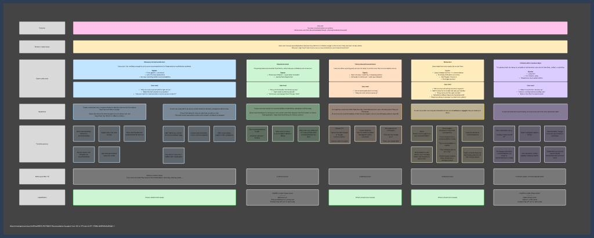
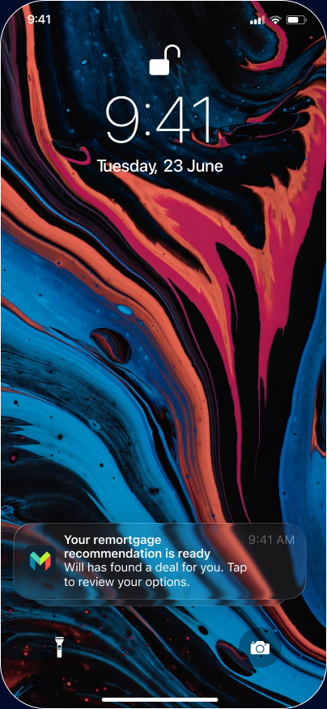
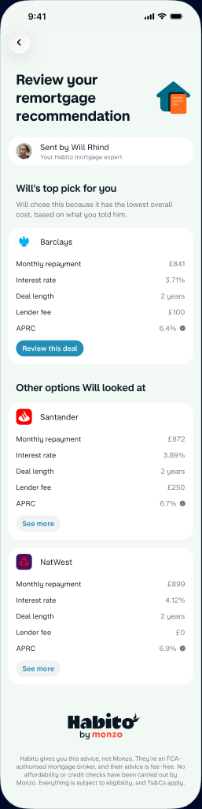
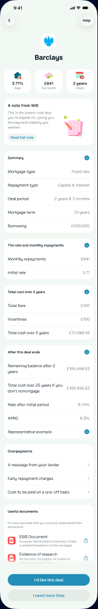
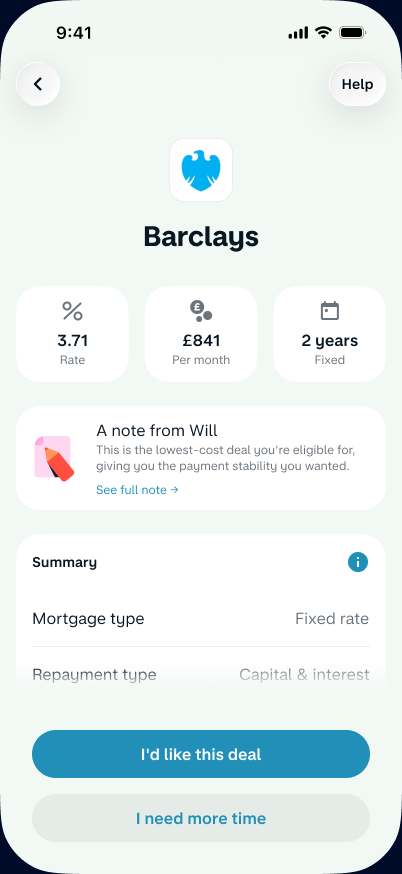
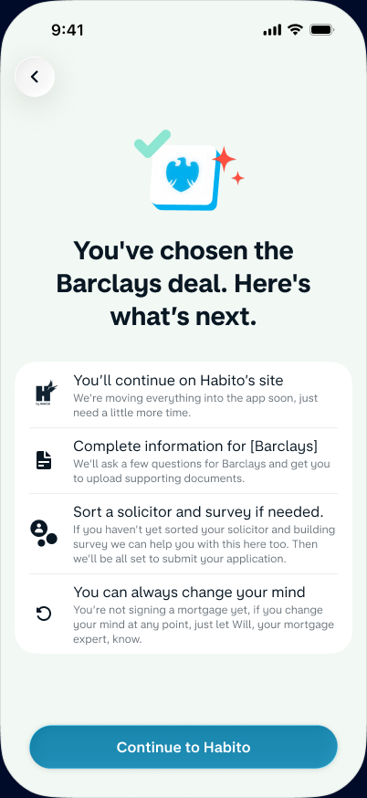
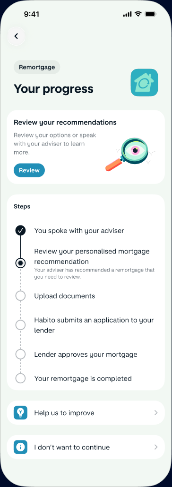
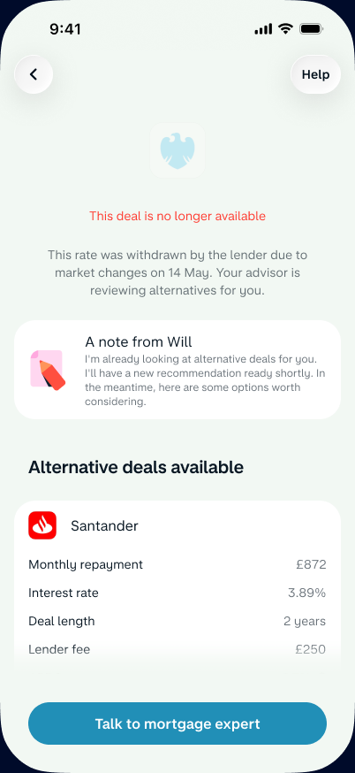
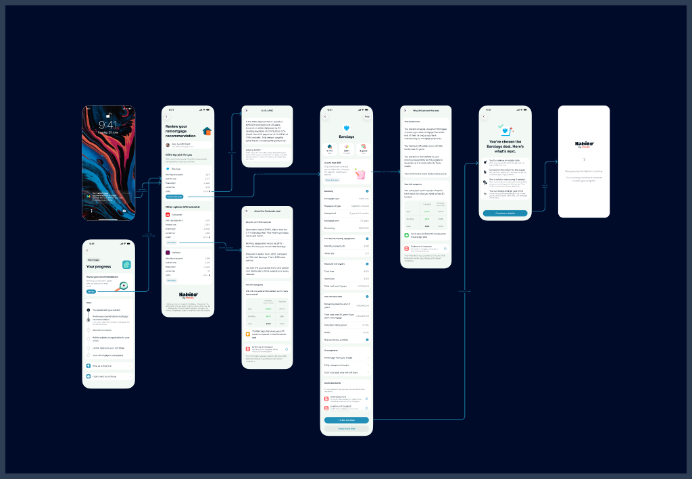
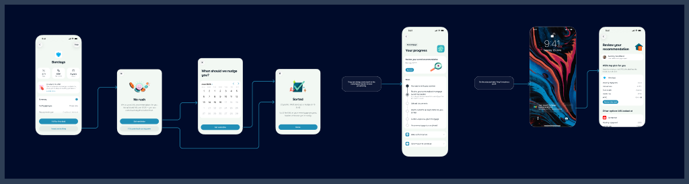

Users were opening their mortgage recommendation, reading it, and leaving to sense-check elsewhere. I led design end-to-end — from mapping the opportunity space with research, through principles and explorations, to shipped screens across iOS and Android.
This case study shows the full arc: how research shaped the opportunity tree, how the tree shaped design principles, and how those principles turned into the screens and flows that shipped.
We built an opportunity solution tree to map the problem space.
Before any screens, we ran a structured research phase: moderated walk-throughs with 18 customers mid-decision, clickstream analysis of 12 weeks of journeys, and trust-diary tasks. The output was an opportunity solution tree that mapped every reason users weren't accepting recommendations.

Five opportunity areas, colour-coded
The tree identified five areas causing drop-off. We classified each as a primary driver (root cause) or amplifier (makes things worse), and mapped who owns each — Monzo or Habito.
- Relevancy Recommendations felt impersonal. Users wanted to know why this deal was right for them specifically. Primary driver — Habito's hands.
- Experience break The journey felt disconnected from Monzo, reducing confidence. Amplifier — in Monzo's power.
- Timing Users were exploring early and not ready to commit. Primary driver — in Monzo's power.
- Momentum Delays between fact-find and recommendation meant users forgot or moved on. Primary driver — in Monzo's power.
- Friction The process felt too heavy to complete or resume. Amplifier — in Monzo's power.
- 0%left the flow to sense-check with another broker
- 0 daysaverage gap between recommendation and action
- 0%dropped off at the Monzo→web handoff
- 0out of 5 root causes were in Monzo's direct power to fix
This is a decision, timing, and trust problem — not a discovery problem.
The key reframe: users already had a recommendation. They weren't struggling to find one — they were struggling to commit. At the moment of receiving a recommendation, three things went wrong at once:
"It looked good, but I wanted to double-check somewhere else before I committed."
— Amara, 34, first-time buyer
"I got to the handoff screen and that was it — I opened a new tab and went to compare."
— Joaquín, 41, re-mortgaging
"How do I know this is actually the best one for me right now?"
— Priya, 29, researching options
We replaced "improve the recommendation screen" with "support a decision under uncertainty." That reframing changed everything downstream — it moved us from polishing a screen to designing a moment.
Eight principles that shaped every screen.
These emerged from the research tree and guided every design decision. They're not abstract values — each one directly maps to a research finding.
Advisor-led, not system-led
Frame everything through "Will" the advisor, not the algorithm. Trust comes from a person, not a machine.
Progressive disclosure
Layer information: summary first, detail on demand. Don't overwhelm at the moment of decision.
Decision support, not pressure
Show a top pick but keep alternatives visible. Let users compare without feeling pushed.
Graceful failure
When a deal expires, the advisor is already looking at alternatives. Nothing dead-ends.
Let users leave safely
Users who aren't ready to decide shouldn't feel like they're abandoning the process.
One journey, honest about the seams
When the handoff to Habito happens, be transparent. Don't pretend the boundary doesn't exist.
Continuity across sessions
Assume users will leave and come back. Design for multi-session journeys, not single-sitting conversion.
Transparency about roles
Be clear about who gives the advice (Habito) and who surfaces it (Monzo). Honesty builds trust.
What we shipped — every key screen from the flow.
Swipe through the screens. Each one maps directly back to an opportunity area from the research tree. Nothing here was designed in isolation — every screen solves a specific problem we identified.







Three flows that changed the numbers.
Advisor-led recommendations
"Will's top pick for you" with clear reasoning: "lowest overall cost, based on what you told him." An advisor note explains why, not just what. Users see multiple options but get a clear recommendation. This directly addressed the #1 research finding — recommendations felt impersonal.
Fear of commitment
Users who aren't ready pick a date to be reminded. They leave without feeling like they've abandoned the process. When the date arrives, a push notification brings them back to the exact same point. This solved the timing mismatch — the biggest root cause in Monzo's power.
Graceful deal expiry
"This deal is no longer available" — but it doesn't dead-end. Will says "I'm already looking at alternative deals for you" and the user sees other options immediately. The advisor relationship survives the failure, and momentum is preserved.


What happened after we shipped.
Four weeks post-launch, across 5.4M daily active customers.
"Laura reframed the brief. We came in thinking we needed a prettier recommendation screen and left having shipped a decision moment. That reframing is what made the numbers move."
— Product Lead, Accepting Recs
What I'd take to the next one.
- Research trees are design tools. The OST wasn't just documentation — it was the artifact that aligned the whole team. Every screen decision could be traced back to a branch on the tree.
- The brief is half the design. Moving from "discovery problem" to "decision, timing, and trust problem under uncertainty" is what unlocked everything. Reframing before designing is a superpower.
- Design for the worst case first. The deal-expired flow and the "not ready yet" flow aren't edge cases — they're where trust is won or lost. Graceful failure is a feature.
- Principles > process. Eight principles that the team could recite from memory were more useful than any number of Jira tickets. When an engineer asked "should this link open in Monzo or on the web?" the answer was always in a principle.
With the Accepting Recs squad — product, research, engineering, and content design. Led design; couldn't have done any of it alone.
Back to all work →